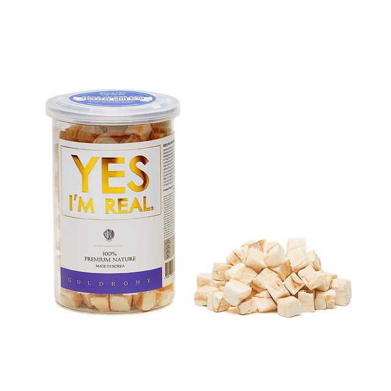

강아지에게 이로운 음식
|  | 1. 복어 |
|---|---|
| 단백질, 아미노산이 많이 함유되어 있어 기력회복에 좋습니다. 강아지용 북어를 급여해주셔도 되고 일반 북어도 급여해주어도 됩니다.일반 북어는 물에 푹 담가 염분을 꼭 제거하고 급여해주세요. 끓는 물에 끓여주면 염분제거가 확실하게 된답니다. | |
| 2. 두부 | |
| 콜레스테롤을 낮추고 소화 흡수에 도움이 됩니다. 고기 알레르기가 있는 강아지에게 대체식품으로 좋습니다. 단, 두부도 염분이 있으니 꼭 염분을 제거 후 급여해주세요. | |
| 3.연어 | |
| 면역력 강화, 뇌세포 발달, 피부질환 등 많은 곳에 도움을 줍니다. 강아지용으로 건조되어 나온 것을 급여하거나 반드시 익혀서 급여해주세요. 사람 먹 듯 회로 먹는건 안 됩니다. |